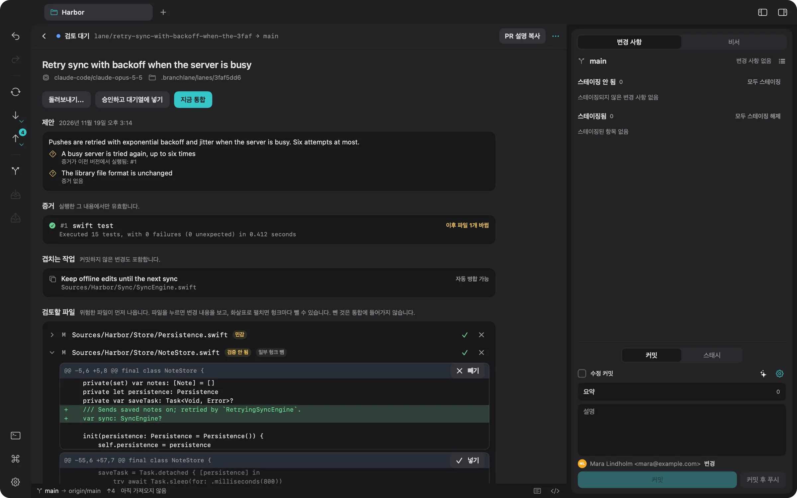

가이드에이전트
에이전트 Lane
코딩 에이전트마다 브랜치와 폴더를 따로 주고 한 곳에서 검토합니다.
에이전트 Lane은 Claude Code, Codex 같은 코딩 에이전트에게 브랜치와 폴더를 따로 주고, 그 작업을 한 곳에서 검토하고 통합하게 합니다.

- 결정. 돌려보내기, 승인하고 대기열에 넣기, 지금 통합 중에서 고릅니다.
- 제안. 에이전트가 적은 요약과 주장입니다. 증거가 없거나 오래된 주장은 표시됩니다.
- 증거. 에이전트가 기록한 테스트, 빌드, 린트입니다. 실행한 그 내용에서만 유효하고, 그 뒤에 바뀐 파일이 있으면 알려 줍니다.
- 겹치는 작업. 다른 Lane이나 대상 브랜치와 같은 줄을 고치면 줄 범위와 먼저 통합할 쪽을 보여 줍니다.
- 검토 파일. 위험한 파일이 먼저 나옵니다. 파일이나 헝크를 빼면 그 부분은 통합하지 않습니다.
쓰는 순서#
- 설정 > 에이전트에서 에이전트를 연결합니다. 에이전트마다 넣을 설정을 그대로 보여 주고, 서버는 이 Mac 안에서만 열립니다.
- 왼쪽 패널의 Lane 구역에서 Lane을 만들거나, 에이전트가 자기 도구로 시작하게 둡니다.
- 에이전트가 검토를 요청하면 Lane을 엽니다.
- 전부 받거나, 파일이나 헝크를 빼거나, 이유를 적어 돌려보냅니다. 통합한 Lane은 커밋 하나로 되돌릴 수 있습니다.
에이전트에게 이렇게 부탁하세요#
연결한 뒤에는 평소처럼 일을 맡기고 Lane을 쓰라고 한마디 붙이면 됩니다.
Claude Code
Branchlane Lane에서 작업해 줘. 서버가 바쁠 때 동기화를 지수 백오프로 다시 시도하게 하고,
swift test를 돌린 결과를 증거로 남긴 뒤 검토를 요청해.터미널에서 보기#
Lane은 평범한 Git 브랜치와 워크트리라서 터미널과 다른 Git 도구에서도 보입니다.
터미널
git worktree list출력
/Users/me/src/app 9b26e1e [main]
/Users/me/src/app/.branchlane/lanes/a7f460dc 4c1d2e0 [lane/retry-sync-with-backoff-a7f4]내 도구를 연결하려면 개발자 문서를 보세요.